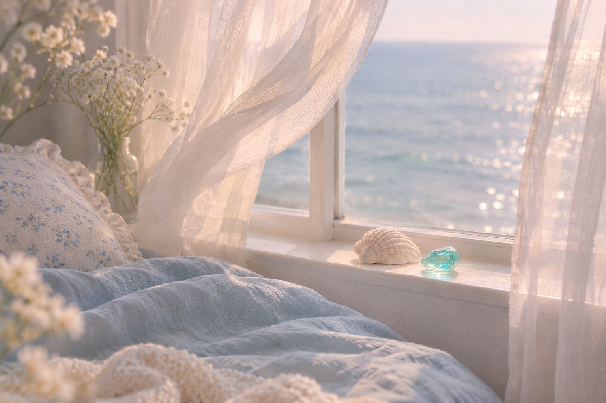
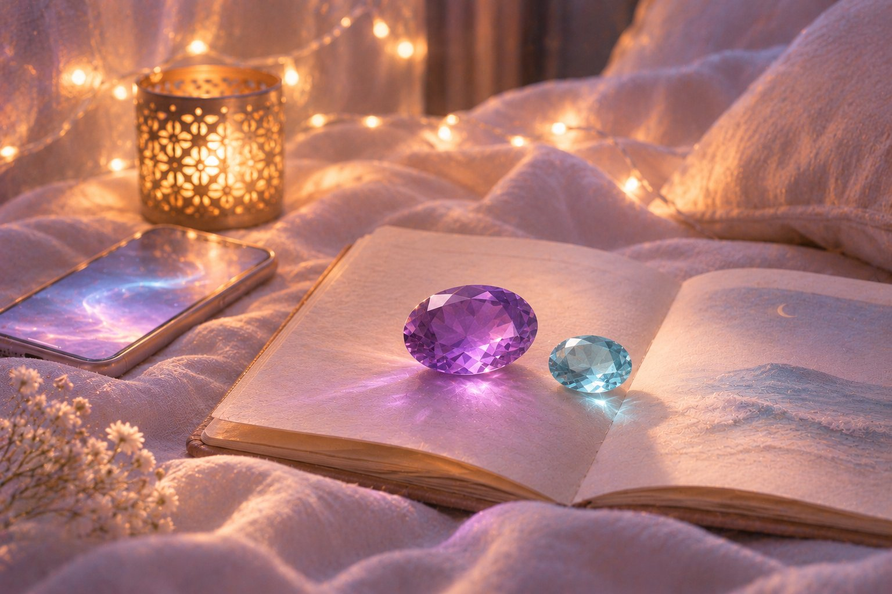

You give surprisingly good relationship advice, then spend forty minutes wondering what your crush meant by a single emoji. You're the chill friend with approximately seventeen emotional plot twists happening behind your eyes. Sounds familiar? Pisces (February 19 to March 20) has two birthstones, aquamarine and amethyst. Their colors tell two very different stories.

The Pisces everyone knows
Why Does Everyone Think Pisces Is So Chill?
Five minutes into a conversation, someone is explaining their entire relationship history, and somehow you've become their unofficial therapist.
You're the girl who sends a funny picture to the group chat when things get awkward. When someone asks where you want to eat, your answer is almost always "anywhere."
Aquamarine, the sea-blue birthstone of March, matches this side of Pisces. Picture clear, calm water under a pale morning sky. Soft, unhurried, quietly inviting.
Everyone wants a friend they can be completely themselves around. That friend is usually you.
The Pisces nobody sees
What Is Actually Happening Inside Your Head?
Behind that innocent little smile, an entire fictional universe is under construction.
You've imagined conversations that will probably never happen. You've made playlists for people who have no idea they have a soundtrack. You can miss a moment while you're still living it.
Being left on read? Naturally, that deserves three different theories and a sad song.
Amethyst, the violet birthstone of February, mirrors this secret dream world, where even ordinary moments become little mysteries.
There are entire chapters of your personality that nobody has read. Some of them might even surprise you.
Two fish, two secret lives
Why Do People Keep Getting Pisces Wrong?
Someone sees you staring out of a window and assumes you're thinking about absolutely nothing.
Adorable.
You've actually been replaying Tuesday's conversation and mentally directing a music video.
The Pisces symbol shows two fish swimming in opposite directions. One swims through everyday life. The other disappears into somewhere beautifully impossible.
Aquamarine mirrors the gentle blue surface. Amethyst matches the violet depths underneath.
People mistake your softness for simplicity. They notice how easily you understand them and forget to wonder whether anyone understands you.
Somewhere beneath the surface
Who Are You When Nobody Is Watching?
It's 2 a.m. Your room is dark. That one song comes on, and suddenly you're crying about something you thought you'd forgotten.
You open your journal to write one sentence. Three pages later, you're discovering feelings you didn't even know you had.
You rewrite an entire conversation in your head, give yourself a much better ending, and smile at the ceiling.
Maybe violet is the color of all those little things you never quite know how to say.
For once, nobody else's feelings come first. The night belongs entirely to you.

When your violet side wants out, Gemflow turns amethyst into slow-moving light on your phone, so you can watch your inner color for once.
Pisces has two birthstones because one color could hardly tell the whole story of you.